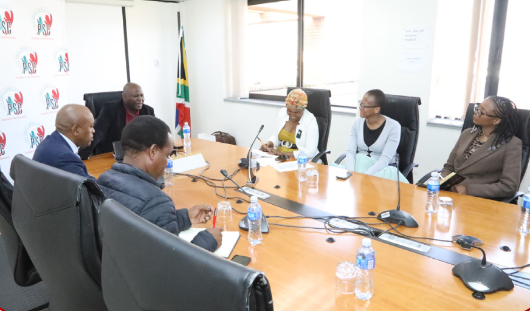
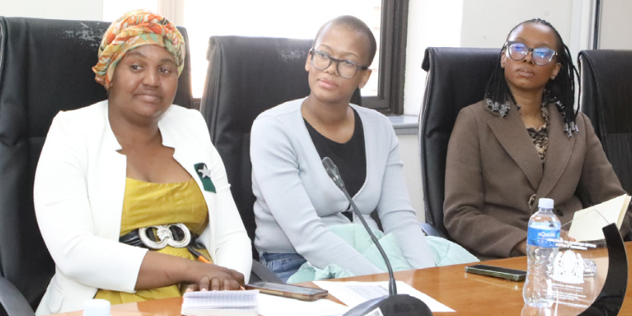

The Public Service Commission hosted an engagement in Pretoria with representatives from the AmaNdebele and Venda Royal Families, opening a discussion on how traditional institutions can support stronger, better-served communities.
Traditional leadership as a development partner
On 17 July 2026, PSC Chairperson Prof Somadoda Fikeni and Commissioner Bheki Zulu met with royal family delegates to reflect on the role of traditional schools, the responsibilities of royal households, and the ways in which heritage-based leadership can contribute to modern community development.
The discussion also honoured the late King Enoch Makhosonke Mabhena II. Prof Fikeni recognised the King as a forward-looking leader and encouraged the continuation of his community-focused work, especially where it relates to education, youth development, and the revival of traditional learning spaces.

Professional support for royal households
A key theme from the engagement was the need to formalise and strengthen support systems around royal families. Participants explored how royal households could operate as community-facing service points, helping residents connect with information, programmes, and development opportunities more easily.
The meeting also surfaced the importance of governance and financial capability within traditional leadership structures. Princess Mgetshani and Princess Khethiwe Mabhena contributed insights from their experience in governance and financial management, while Princess Ravele Ramabulana added a strong agricultural perspective to the conversation.

Agriculture, youth empowerment, and poverty relief
Princess Ramabulana highlighted farming as a practical route for reducing poverty and building local resilience. Her contribution aligned closely with the broader conversation about giving young people access to education, governance awareness, and productive economic pathways.
Commissioner Zulu closed by thanking the delegation for their commitment and affirmed the PSC's willingness to continue working with traditional leaders. The message was clear: stronger collaboration between public institutions and royal leadership can help unlock more grounded, community-led development.
Reference
This article was rewritten for Ravele Royal Farming Enterprise from PSC publication information. View the original reference at PSC Publication Gallery.